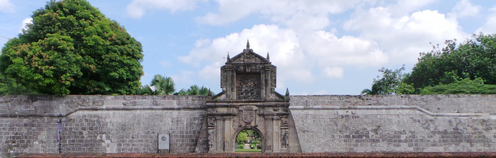

Sa pahinang ito, makikita ang mga sangguniang ginamit upang bumuo ng aming website at mga nilalaman tungkol sa kasaysayan ng Pilipinas.

Mga Aklat at Artikulo
Abinales, P. N., & Amoroso, D. J. (2017).State and Society in the Philippines. Rowman & Littlefield.
Agoncillo, T. A. (1990).History of the Filipino People. Punlad Research House. [pp. 72–74]
Agoncillo, T. A. (1990).Revolt of the Masses: The Story of Bonifacio and the Katipunan. University of the Philippines Press.
Bellwood, P. (1997).Prehistory of the Indo-Malaysian Archipelago. ANU Press.
Blust, R. (2009).The Austronesian Languages. Asia-Pacific Linguistics.
Constantino, R. (1975).The Philippines: A Past Revisited. Tala Publishing.
Curato, N. (2017).A Duterte Reader: Critical Essays on Rodrigo Duterte's Early Presidency. Ateneo de Manila University Press.
Dery, L. C. (2001).A History of the Inarticulate: Local History, Prostitution, and Other Views from the Bottom. New Day Publishers.
Fox, R. B. (1970).The Tabon Caves: Archaeological Explorations and Excavations on Palawan Island, Philippines. National Museum of the Philippines.
Heydarian, R. J. (2018).The Rise of Duterte: A Populist Revolt Against Elite Democracy. Palgrave Macmillan.
Hutchcroft, P. (2008).Booty Capitalism: The Politics of Banking in the Philippines. Ateneo de Manila University Press.
Jocano, F. L. (1998).The Filipino Prehistory: Rediscovering Precolonial Heritage. Punlad Research House.
Laguna Copperplate Inscription. Postma, A. (1991).A Valuable Philippine Artifact. National Museum of the Philippines.
Majul, C. A. (1973).Muslims in the Philippines. University of the Philippines Press.
Malloryk. (2021, July 1).July 4, 1946: The Philippines Gained Independence from the United States. The National WWII Museum. Retrieved from https://www.nationalww2museum.org
Proclamation 2148—Establishment of the Commonwealth of the Philippines. (n.d.). The American Presidency Project. Retrieved from https://www.presidency.ucsb.edu
Proclamation 2695—Independence of the Philippines. (n.d.). The American Presidency Project. Retrieved from https://www.presidency.ucsb.edu
Revolutionary Wars and American Influence. The. (n.d.).Philippine Revolution | Facts, Leaders, & Significance. Encyclopedia Britannica. Retrieved from https://www.britannica.com
Schumacher, J. N. (1991).The Propaganda Movement: 1880–1895. Ateneo de Manila University Press.
Scott, W. H. (1984).Prehispanic Source Materials for the Study of Philippine History. New Day Publishers.
Scott, W. H. (1994).Barangay: Sixteenth-Century Philippine Culture and Society. Ateneo de Manila University Press.
Sobritchea, C. (1990).American Colonial Education and Its Impact on the Status of Filipino Women. Retrieved from https://asj.upd.edu.ph
Tadiar, N. X. M. (2009).Things Fall Away. Duke University Press.